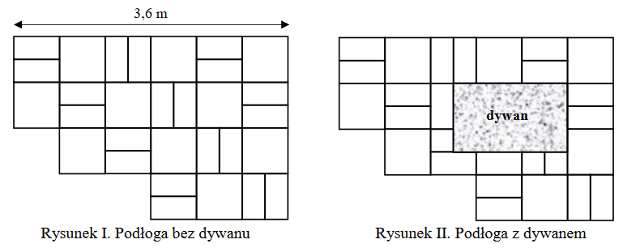
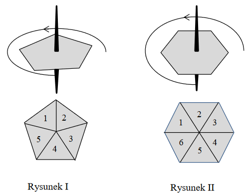
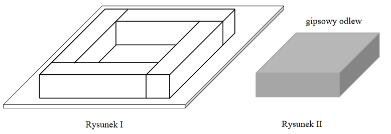
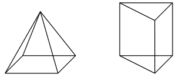
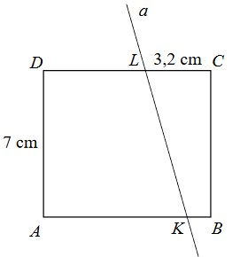
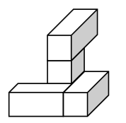
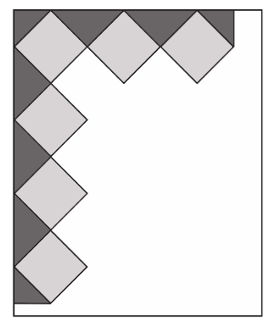
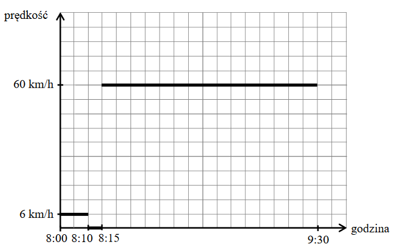

Egzamin ósmoklasisty 2018 grudzień
Firma przesyłkowa korzysta z paczkomatów do samodzielnego nadawania i odbierania
przesyłek przez klientów. Maksymalne wymiary prostopadłościennej paczki, którą można nadać za
pośrednictwem tej firmy, wynoszą \(38 \text{cm} \times 41 \text{cm} \times 64 \text{cm}\), a masa
przesyłki nie może być większa niż \(25\) kg. W tabeli zapisano wymiary i masę czterech paczek.
| Nr paczki |
Wymiary |
Masa |
| \(1\) |
\(37 \text{cm} \times 41 \text{cm} \times 66 \text{cm}\) |
\(23\) kg |
| \(2\) |
\(38 \text{cm} \times 38 \text{cm} \times 59 \text{cm}\) |
\(25\) kg |
| \(3\) |
\(35 \text{cm} \times 40 \text{cm} \times 64 \text{cm}\) |
\(26\) kg |
| \(4\) |
\(26 \text{cm} \times 39 \text{cm} \times 63 \text{cm}\) |
\(22\) kg |
Które z tych paczek mogą być nadane przez paczkomat tej firmy? Wybierz właściwą odpowiedź
spośród podanych.
A.Tylko \(1\), \(2\) i \(4\)
B.Tylko \(2\) i \(3\)
C.Tylko \(3\) i \(4\)
D.Tylko \(2\) i \(4\)
E.Tylko \(4\)
D
Poniżej zamieszczono fragment etykiety z jogurtu o masie \(150\) g.
| Wartość odżywcza |
w \(100\) g |
| energia |
\(290\) kJ / \(69\) kcal |
tłuszcz
w tym kwasy nasycone |
\(3{,}0\) g
\(1{,}9\) g |
węglowodany
w tym cukry |
\(5{,}9\) g
\(5{,}9\) g |
| błonnik |
\(0\) g |
| białko |
\(4{,}6\) g |
| sól |
\(0{,}15\) g |
| wapń |
\(167 \text{ mg}^*\) |
| witamina B2 |
\(0{,}25\text{ mg}^*\) |
\(^* 1 \text{ mg} = 0{,}001\) g
Uzupełnij poniższe zdania. Wybierz odpowiedź spośród oznaczonych literami A i B
oraz odpowiedź spośród oznaczonych literami C i D.
Zjedzenie całego jogurtu dostarcza
organizmowi około
A
B
wapnia.
A.\( 167 \) mg
B.\( 250 \) mg
Zjedzenie całego jogurtu dostarcza organizmowi
C
D
razy więcej białka niż witaminy B2.
C.\( 18{,}4 \)
D.\( 18\ 400\)
BD
Oceń prawdziwość podanych zdań. Wybierz
P, jeśli zdanie jest prawdziwe, albo
F – jeśli jest fałszywe.
| \(120\%\) liczby \(180\) to tyle samo, co \(180\%\) liczby \(120\).
|
P |
F |
| \(20\%\) liczby \(36\) to tyle samo, co \(40\%\) liczby \(18\). |
P |
F |
PP
Liczba \(x\) jest najmniejszą liczbą dodatnią podzielną przez \(3\) i \(4\), a
liczba \(y\) jest największą liczbą dwucyfrową podzielną przez \(2\) i \(9\). Dokończ zdanie.
Wybierz właściwą odpowiedź spośród podanych. Najmniejsza wspólna wielokrotność liczb \(x\) i \(y\)
jest równa
A.\( 72 \)
B.\( 108 \)
C.\( 180 \)
D.\( 216 \)
C
Na rysunku przedstawiono fragment podłogi pokrytej kaflami w kształcie kwadratów o
boku długości \(60\) cm i kaflami w kształcie jednakowych prostokątów (patrz rysunek I). Na podłodze
tej położono prostokątny dywan (patrz rysunek II).  Oceń prawdziwość podanych zdań. Wybierz
P, jeśli
zdanie jest prawdziwe, albo
F – jeśli jest fałszywe.
| Dywan ma powierzchnię większą niż powierzchnia \(4\) kwadratowych
kafli. |
P |
F |
| Dywan ma wymiary \(90 \text{ cm} \times 120 \text{ cm}\) |
P |
F |
FF
Prędkość rozchodzenia się impulsu elektrycznego u człowieka wynosi około \(2\)
metrów na sekundę. U roślin impuls elektryczny może rozchodzić się z prędkością około \(60\)
centymetrów na minutę. Ile razy prędkość rozchodzenia się impulsu elektrycznego u człowieka jest
większa od prędkości rozchodzenia się impulsu elektrycznego u roślin? Wybierz właściwą odpowiedź
spośród podanych.
A.W przybliżeniu \(2\) razy.
B.W przybliżeniu \(20\) razy.
C.W przybliżeniu \(200\) razy.
D.W przybliżeniu \(2000\) razy.
C
Monika poprawnie zaokrągliła liczbę \(3465\) do pełnych setek i otrzymała liczbę
\(x\), a Paweł poprawnie zaokrąglił liczbę \(3495\) do pełnych tysięcy i otrzymał liczbę \(y\). Czy
liczby \(x\) i \(y\) są równe?
Wybierz odpowiedź A (Tak) albo B
(Nie) i jej uzasadnienie spośród 1, 2 albo 3.
| A. |
Tak, |
ponieważ |
1. |
początkowa liczba Moniki jest mniejsza od początkowej
liczby Pawła. |
|
| 2. |
cyfra tysięcy każdej z początkowych liczb jest taka sama.
|
| B. |
Nie, |
| 3. |
otrzymane zaokrąglenia różnią się o 500. |
|
B3
Dana jest liczba \(a=3\sqrt{2}-4\).
Uzupełnij poniższe zdania.
Wybierz odpowiedź spośród oznaczonych literami A i B oraz odpowiedź spośród
oznaczonych literami C i D.
Liczba o \(2\) większa od liczby \(a\) jest
równa
A
B
.
A.\( 5\sqrt{2}-4 \)
B.\( 3\sqrt{2}-2 \)
Liczba \(2\) razy większa od liczby \(a\) jest równa
C
D
.
C.\( 6\sqrt{4}-8 \)
D.\( 6\sqrt{2}-8 \)
BD
Państwo Nowakowie mają trzy córki i jednego syna. Średnia wieku wszystkich dzieci
państwa Nowaków jest równa \(10\) lat, a średnia wieku wszystkich córek jest równa \(8\) lat.
Ile lat ma syn państwa Nowaków? Wybierz właściwą odpowiedź spośród podanych.
A.\( 9 \)
B.\( 11 \)
C.\( 12 \)
D.\( 16 \)
D
Do gry planszowej używane są dwa bączki o kształtach przedstawionych na rysunkach.
Każdy bączek po zatrzymaniu na jednym boku wielokąta wskazuje liczbę umieszczoną na jego tarczy. Na
rysunku I bączek ma kształt pięciokąta foremnego z zaznaczonymi liczbami od \(1\) do \(5\). Na
rysunku II bączek ma kształt sześciokąta foremnego z zaznaczonymi liczbami od \(1\) do \(6\).  Oceń prawdziwość podanych zdań.
Wybierz
P, jeśli zdanie jest prawdziwe, albo
F – jeśli jest fałszywe.
| Prawdopodobieństwo otrzymania liczby większej niż \(3\) na bączku z
rysunku I jest większe niż \(\frac{1}{2}\) |
P |
F |
| Uzyskanie nieparzystej liczby na bączku z rysunku I jest tak samo
prawdopodobne, jak uzyskanie nieparzystej liczby na bączku z rysunku II. |
P |
F |
FF
O liczbie \(x\) wiemy, że \(\frac{1}{3}\) tej liczby jest o \(\frac{3}{4}\) większa
od \(\frac{1}{6}\) tej liczby.
Które równanie pozwoli wyznaczyć liczbę \(x\)?
Wybierz właściwą odpowiedź spośród podanych.
A.\( \frac{2}{3}x=\frac{1}{6}x+\frac{3}{4} \)
B.\( \frac{1}{3}x+\frac{3}{4}=\frac{5}{6}x \)
C.\( \frac{1}{3}x=\frac{1}{6}x+\frac{3}{4} \)
D.\( \frac{1}{3}x+\frac{3}{4}=\frac{1}{6}x \)
C
W trójkącie \(ABC\) największą miarę ma kąt przy wierzchołku \(C\). Miara kąta przy
wierzchołku \(A\) jest równa \(48^\circ \), a miara kąta przy wierzchołku \(B\) jest równa różnicy
miary kąta przy wierzchołku \(C\) oraz miary kąta przy wierzchołku \(A\).
Oceń
prawdziwość podanych zdań. Wybierz P, jeśli zdanie jest prawdziwe, albo F – jeśli
jest fałszywe.
| Kąt przy wierzchołku \(B\) ma miarę \(48^\circ\). |
P |
F |
| Trójkąt \(ABC\) jest prostokątny. |
P |
F |
FP
W układzie współrzędnych zaznaczono dwa punkty: \(A=(−8, −4)\) i \(P=(−2, 2)\).
Punkt \(P\) jest środkiem odcinka \(AB\).
Jakie współrzędne ma punkt \(B\)?
Wybierz właściwą odpowiedź spośród podanych.
A.\( (4,8) \)
B.\( (-10,-2) \)
C.\( (-10,8) \)
D.\( (4,-2) \)
A
Cztery jednakowe drewniane elementy, każdy w kształcie prostopadłościanu o
wymiarach \(2 \text{ cm} \times 2 \text{ cm} \times 9 \text{ cm}\), przyklejono do metalowej płytki
w sposób pokazany na rysunku I. 
W ten sposób przygotowano formę, którą wypełniono masą gipsową, i tak otrzymano gipsowy odlew w
kształcie prostopadłościanu, pokazany na rysunku II.
Uzupełnij zdania. Wybierz
odpowiedź spośród oznaczonych literami A i B oraz odpowiedź spośród oznaczonych
literami C i D.
Objętość drewna, z którego zbudowano formę, jest równa
A
B
.
A.\( 144 \text{ cm}^3 \)
B.\( 36 \text{ cm}^3 \)
Objętość gipsowego odlewu jest równa
C
D
.
C.\( 162 \text{ cm}^3 \)
D.\( 98 \text{ cm}^3 \)
AD
Na rysunkach przedstawiono ostrosłup prawidłowy i graniastosłup prawidłowy.
Wszystkie krawędzie obu brył są jednakowej długości. 
Oceń prawdziwość podanych zdań. Wybierz P, jeśli zdanie jest prawdziwe,
albo F – jeśli jest fałszywe.
| Suma długości wszystkich krawędzi ostrosłupa jest większa niż suma
długości wszystkich krawędzi graniastosłupa. |
P |
F |
| Całkowite pole powierzchni ostrosłupa jest większe niż całkowite pole
powierzchni graniastosłupa. |
P |
F |
FF
Prostokąt \(ABCD\) o wymiarach \(7\) cm i \(8\) cm rozcięto wzdłuż prostej a na dwa
trapezy tak, jak pokazano na rysunku. Odcinek CL ma długość \(3{,}2\) cm.  Pole trapezu \(KBCL\) jest
czterokrotnie mniejsze od pola prostokąta \(ABCD\). Oblicz długość odcinka \(KB\). Zapisz
obliczenia.
\(|KB|=0{,}8\) cm
Na pozalekcyjne zajęcia sportowe zapisanych jest \(37\) osób. Uzasadnij, że w tej
grupie są co najmniej 4 osoby, które urodziły się w tym samym miesiącu.
Cztery jednakowe prostopadłościenne klocki, każdy o wymiarach \(2 \text{ cm} \times
1 \text{ cm} \times 1 \text{ cm}\), ułożono tak, jak przedstawiono na rysunku.  Następnie do tej budowli
dołożono sześcienne klocki o krawędzi długości \(1\) cm tak, a by powstał prostopadłościan
najmniejszy z możliwych.
Uzupełnij zdania. Wpisz w każdą lukę odpowiednią liczbę.
Liczba sześciennych klocków o krawędzi długości \(1\) cm, które należy dołożyć do budowli,
jest równa ______. Najmniejszy z możliwych prostopadłościanów, który w ten sposób otrzymano, ma
wymiary ___ cm \(\times\) ___ cm \(\times\) ___ cm.
\(19\) klocków
\(3 \text{ cm} \times 3 \text{ cm} \times 3 \text{
cm}\)
Agata postanowiła przygotować kartkę okolicznościową w kształcie prostokąta,
ozdobioną wzorem dokładnie takim, jak przedstawiony na rysunku. Kartka ta będzie miała wymiary \(15
\text{ cm} \times 18 \text{ cm}\). Do jej ozdobienia Agata chce użyć jednakowych kwadratów, których
bok wyraża się całkowitą liczbą centymetrów. Niektóre z tych kwadratów będzie musiała przeciąć na
dwie lub na cztery jednakowe części.  Oblicz maksymalną długość boku jedne go kwadratu. Do obliczeń przyjmij przybliżenie
\(\sqrt{2}\approx1{,}4\). Zapisz obliczenia.
\(3\) cm
W wyborach na przewodniczącego klasy kandydowało troje uczniów: Jacek, Helena i
Grzegorz. Każdy uczeń tej klasy oddał jeden ważny głos. Jacek otrzymał \(9\) głosów, co stanowiło
\(36\%\) wszystkich głosów. Helena otrzymała o \(6\) głosów więcej niż Grzegorz. Oblicz, ile głosów
otrzymała Helena, a ile - Grzegorz. Zapisz obliczenia.
Helena otrzymała \(11\) głosów, a Grzegorz otrzymał \(5\) głosów.
Ania postanowiła pojechać autobusem do babci do miejscowości Sokółka. Z domu wyszła
o godzinie \(8{:}00\), kilka minut czekała na przystanku, a następnie jechała autobusem. Do Sokółki
dotarła o godzinie \(9{:}30\) i tam na przystanku spotkała się z babcią. Na wykresie w sposób
uproszczony przedstawiono zależność prędkości, z jaką poruszała się Ania, od czasu.  Oblicz długość trasy pokonanej
przez Anię od wyjścia z domu do chwili spotkania z babcią. Zapisz obliczenia.
\(76\) km